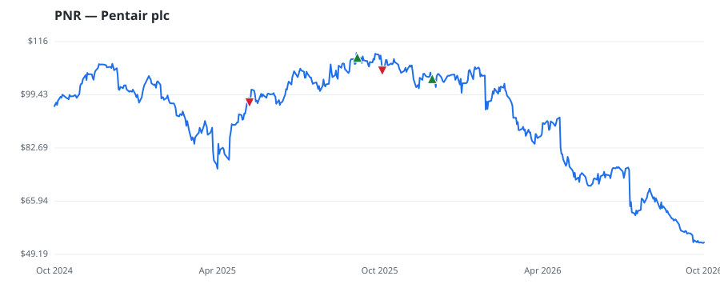

bullish · bearish · n/a — dots: price>SMA10 · SMA10>SMA50 · SMA50>SMA200 · up>down volume (20d)
Capital Goods · large cap · ★ 2 buyer(s) sit on a committee that regulates this industry
Members who bought PNR earned a dollar-weighted -19.9% from their disclosure dates, versus +3.5% for the S&P 500 over the same holding windows (-23.4% alpha).

▲ green = a disclosed purchase · ▼ red = a disclosed sale (plotted on disclosure date)
Pentair is a global leader in the water treatment industry, with 10,000 employees and a presence in 25 countries. Its business is organized into three segments: pool, water technologies, and flow. The company offers a wide range of water solutions, including energy-efficient swimming pool equipment, filtration solutions, and commercial and industrial pumps. Pentair generated approximately $4.2 billion in revenue in 2025. SPECIAL INDUSTRY MACHINERY (NO METALWORKING MACHINERY) · website
| Revenue | $4.2B | Net income | $653.8M |
|---|---|---|---|
| Operating income | $857.5M | Diluted EPS | $3.96 |
| Assets | $6.9B | Equity | $3.9B |
| Member | Chamber | Out-performer | Disclosed buys $ | Return on buys |
|---|---|---|---|---|
| Markwayne Mullin | senate | — | $32K | -35.9% |
| Valerie Hoyle ★ | house | — | $8K | -3.4% |
| Rohit Khanna ★ | house | — | $8K | +28.1% |
Disclosed $ figures are bracket midpoints — filings report ranges (e.g. $1,001–$15,000), not exact amounts.
| Fund | Fund alpha vs SPY | Position | % of book |
|---|---|---|---|
| Clean Energy Transition LLP | +10% | $59M | 5.4% |
Hedge data: SEC EDGAR 13F · ranked funds beat SPY in >50% of their quarters · fund alpha = mirror-portfolio return minus SPY.